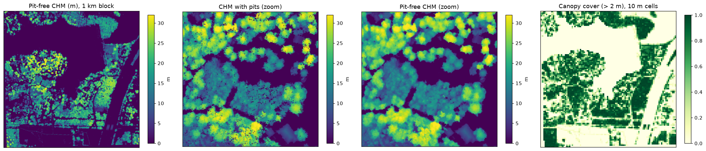
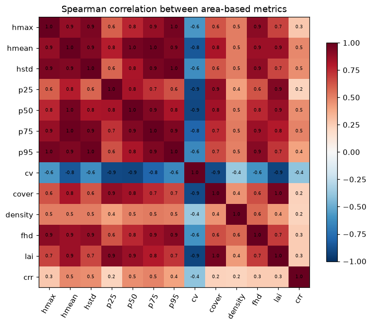
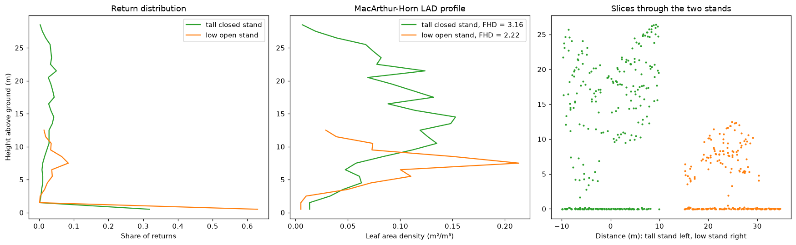
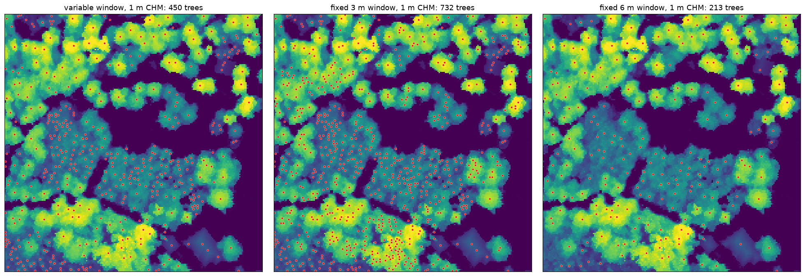
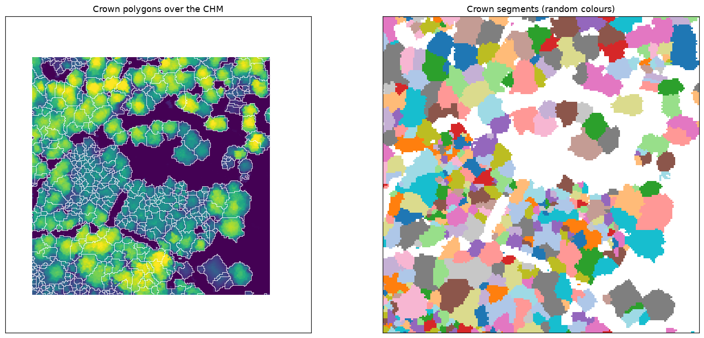
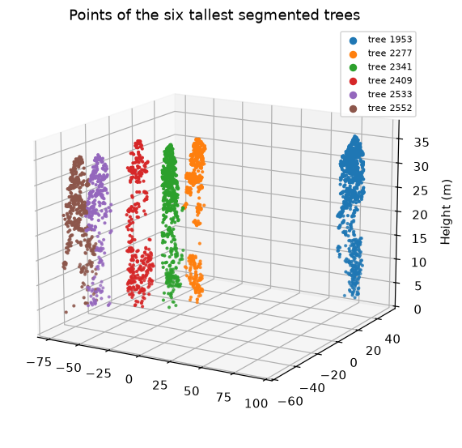
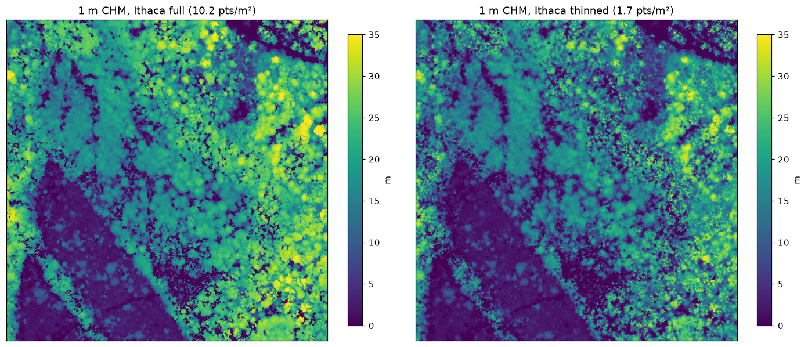

Forests are where LiDAR shows its greatest advantage over passive imagery: pulses pass through gaps in the canopy, so one survey records canopy height, cover, the vertical distribution of foliage and the ground beneath. This notebook turns the Madison, Mississippi, point cloud into the two kinds of forest information used in practice: area-based metrics on a grid or on field plots, and individual trees with their heights and crowns. A denser 2020 survey from Ithaca, New York, shows how point density changes the results.
Overview
Why LiDAR for forests
Canopy height is the strongest single predictor of timber volume and aboveground biomass, and LiDAR measures it directly, to within about a metre for dominant trees. Optical and radar sensors only infer it. National forest inventories in the Nordic countries, forest agencies in North America and carbon projects worldwide use airborne LiDAR to map volume, basal area, biomass, site quality, fuel loads for fire models and habitat structure for wildlife.
Height normalisation
Raw point elevations mix terrain and vegetation. Subtracting the DEM elevation interpolated at each point’s position gives its height above ground:
\[h_i = z_i - \text{DEM}(x_i, y_i).\]
Every forest metric is computed from these heights; errors in the ground classification therefore propagate directly into canopy heights.
The area-based approach (ABA)
The ABA (Næsset 2002) summarises the heights of all returns in a cell or plot with a set of metrics and links them to field measurements with a regression model:
Field plots (typically 200 to 900 m²) are measured on the ground, the same metrics are computed for the LiDAR points inside each plot, a model (linear regression on log-transformed metrics, random forest, etc.) is fitted, and the model is applied to every grid cell of the same size.
Vertical profiles
The share of returns in each height layer, corrected for the light that never reached lower layers, gives a leaf area density profile (MacArthur and Horn 1969):
where \(P_{\text{gap}}(z)\) is the fraction of returns below height \(z\) and \(k \approx 0.5\) is the extinction coefficient.
Individual tree detection (ITD)
With enough points per crown (roughly 5 or more per m²), individual trees can be found:
Treetops are local maxima of the CHM. The search window should scale with tree height, because tall trees have wide crowns; a fixed window either merges small trees or splits large crowns.
Crowns grow outward from the treetops with a marker-controlled watershed on the inverted CHM, stopping where crowns meet or the canopy drops below a minimum height.
Per-tree attributes: height, crown area and diameter, and through allometric equations stem diameter, volume and biomass.
Point-based methods assign points to trees directly in 3D and avoid the smoothing of a raster CHM. ITD works best for conifers with distinct apexes; broad, interlocking deciduous crowns are often merged or split.
Forest Analysis with GeoLattice
Learning objectives
Normalise point heights with a DEM and relabel vegetation by height.
Build canopy height models and canopy cover maps and understand pit filling and cell size.
Compute area-based metrics on a grid and for circular field plots.
Describe vertical structure with height profiles, leaf area density and foliage height diversity.
Detect treetops with variable and fixed windows, segment crowns and check allometry.
Segment trees directly in the point cloud and extract the points of individual trees.
Assess how point density changes canopy metrics and tree detection.
Data
File
Content
madison_utm.laz
Madison, Mississippi: airborne LiDAR in UTM zone 15N metres, about 1.7 points/m², leaf-on, mixed pine and hardwood forest, written by the fundamentals notebook
Ithaca/u_3780069650.las
One USGS 3DEP 2020 tile from Ithaca, New York, about 6.5 points/m², with ground classified
Contents
Setup
Height normalisation and vegetation classes
Canopy height model and canopy cover
Area-based metrics on a grid
Vertical structure
Metrics for field plots
Treetop detection
Crown segmentation and allometry
Point-based tree segmentation
Point clouds of individual trees
Effect of point density
Exporting the products
Summary and exercises
Setup
Installation. This notebook needs installation option 5 (core, spatial analysis, spatial statistics, geostatistics and remote sensing): pip install "geolattice[remote-sensing]". See “Installation options” in the GeoLattice README.
Code
import warnings # warning controlwarnings.filterwarnings("ignore") # hide routine library warningsimport time # timingimport numpy as np # arraysimport pandas as pd # tablesimport geopandas as gpd # vector dataimport rasterio # raster I/Oimport matplotlib.pyplot as plt # figuresimport geolattice.rsense as rs # GeoLattice remote sensingrasterio.Env(CPL_LOG="/dev/null").__enter__() # silence GDAL log messagesplt.rcParams.update({"figure.dpi": 110}) # figure resolutionprint("geolattice.rsense", rs.__version__, "| backend:", rs.set_backend("cpu")) # version and array backend
geolattice.rsense 0.3.49 | backend: cpu
Code
from pathlib import Path # file paths# The notebook's data folder: ../../../../Data/08_remote_sensing/08_06_lidar/ next to this notebook, found from here or from the repository root.DATA =next((p for p in (Path("Data/08_remote_sensing/08_06_lidar"), Path("../../../../Data/08_remote_sensing/08_06_lidar"))if p.is_dir()), None)if DATA isNone: # neither location exists# stop with a clear messageraiseFileNotFoundError("Run the notebook from its own folder or from the GeoLattice repository root.")OUT = DATA.parent /"outputs"# folder for the products this notebook writesOUT.mkdir(exist_ok=True) # create it if neededMADISON_UTM = DATA /"madison_utm.laz"# metric Madison cloud from the fundamentals notebookifnot MADISON_UTM.exists(): # not written yet: build it from the COPC file ft = rs.lidar.read_las(DATA /"madison.copc.laz") # feet, state plane xy = rs.lidar.reproject(ft, 32615) # x and y to UTM 15N# write the metric cloud (z feet -> metres) rs.lidar.write_las(rs.PointCloud(xy.x, xy.y, np.asarray(ft.z) *0.3048006096, dict(xy.attrs), 32615), MADISON_UTM) # with z converted to metresITHACA_TILE = DATA /"Ithaca"/"u_3780069650.las"# a 2020 tile with forested valley walls
Height normalisation and vegetation classes
The analysis uses a 1 km x 1 km block of the Madison survey. The DEM comes from the producer’s ground points (class 2); rs.lidar.normalize_heights adds a height field to every point by bilinear interpolation of the DEM.
The fundamentals notebook showed that this producer used the vegetation codes 3 and 4 by return number, not by height. rs.lidar.classify_vegetation relabels vegetation by height above ground with the ASPRS convention: low (3) 0.5 to 2 m, medium (4) 2 to 5 m and high (5) above 5 m.
Code
madison = rs.lidar.read_las(MADISON_UTM).drop_noise() # whole cloud without noise pointsx0, y0 = madison.bbox[:2] # south-west cornerpc = madison.crop(x0, y0, x0 +1000, y0 +1000) # a 1 km x 1 km blockdem = rs.lidar.dem(pc, 1.0) # bare-earth DEM from the producer's ground pointspcn = rs.lidar.normalize_heights(pc, dem) # adds the "height" fieldh = np.asarray(pcn["height"]) # heights above groundprint(pcn) # the normalised cloud# summary lineprint(f"height above ground: median {np.median(h):.2f} m, 99th percentile {np.percentile(h, 99):.1f} m, "f"max {h.max():.1f} m | below -0.5 m: {np.mean(h <-0.5):.2%}") # sanity checkspcn = pcn.with_field("classification", np.where(np.isin(pcn["classification"], (3, 4, 11)), 1, # reset veg and class 11 pcn["classification"]).astype("uint8"))veg = rs.lidar.classify_vegetation(pcn) # low (3), medium (4), high (5) by heightpd.crosstab(pd.Series(pc["classification"], name="producer class"), # producer vs height-based classes pd.Series(veg["classification"], name="height-based class"))
<PointCloud 1,721,455 pts [CPU] fields=['x', 'y', 'z', 'intensity', 'return_number', 'number_of_returns', 'classification', 'scan_angle', 'gps_time', 'user_data', 'point_source_id', 'height'] bbox=(767836.4, 3594643.1, 768823.0, 3595643.1) crs=32615>
height above ground: median 0.09 m, 99th percentile 27.4 m, max 36.3 m | below -0.5 m: 0.01%
height-based class
1
2
3
4
5
9
producer class
1
32533
0
27
20
48
0
2
0
609752
0
0
0
0
3
132
0
307
25503
313230
0
4
49654
0
17598
41452
222444
0
9
0
0
0
0
0
5355
11
239173
0
5302
15217
143708
0
Heights range from 0 to about 36 m, with almost no points more than half a metre below the DEM, a sign that the ground classification and the DEM are consistent. The cross-table shows that the producer’s “low vegetation” (3) points are now spread over all three height classes, and that the class 11 overlap points are mostly high vegetation and ground.
Canopy height model and canopy cover
rs.lidar.chm takes the cloud (and builds DSM and DEM internally) or a DSM plus DEM. Its pit_free option removes “pits”, single cells where a pulse travelled deep into a crown and the highest return per cell is far below the canopy surface; they break crowns apart in tree detection. Canopy cover is the share of first returns above 2 m in each cell.
The DSM is gap-filled by interpolation. Over water, which returns no laser echoes, the interpolation stretches the heights of the shoreline trees across the whole lake and creates fake canopy. The small helper mask_empty sets CHM cells with no return within 2 m to zero before any tree analysis. The zoom panels show the 200 m window with the most tall canopy.
Code
from scipy import ndimage as nd # morphologydef mask_empty(grid, cloud, cells=2): # set CHM cells with no return within `cells` cells to 0 (water, data gaps) hits = rs.lidar.rasterize(cloud, float(abs(grid.x[1] - grid.x[0])), stat="count", bounds=cloud.bbox) # returns per cell near = nd.binary_dilation(hits.reindex_like(grid, method="nearest").fillna(0).values >0, iterations=cells) # near datareturn grid.where(near, 0) # interpolated values far from any return become 0t0 = time.perf_counter() # start the timerchm_raw = mask_empty(rs.lidar.chm(pc, res=1.0, pit_free=False), pc) # CHM with pitschm = mask_empty(rs.lidar.chm(pc, res=1.0, pit_free=True), pc) # pit-free CHM (median filter)print(f"two 1 m CHMs in {time.perf_counter() - t0:.1f} s | grid {chm.shape} | "# summary linef"canopy > 2 m: {float((chm >2).mean()):.1%} of the area") # summaryfirst = pcn.first_returns() # one return per pulsecover = (rs.lidar.rasterize(first.filter(np.asarray(first["height"]) >2), 10.0, stat="count", bounds=pcn.bbox) # canopy hits/ rs.lidar.rasterize(first, 10.0, stat="count", bounds=pcn.bbox)).fillna(0) # / all first returnstall = (chm >10).coarsen(x=200, y=200, boundary="trim").mean() # share of tall canopy in 200 m windowswy, wx = np.unravel_index(int(tall.argmax()), tall.shape) # the most forested windowzoom =dict(x=slice(wx *200, wx *200+200), y=slice(wy *200, wy *200+200)) # its pixel rangesfig, axes = plt.subplots(1, 4, figsize=(20, 4.8)) # four panelsrs.viz.plot_raster(chm, ax=axes[0], cmap="viridis", vmin=0, vmax=32, title="Pit-free CHM (m), 1 km block") # full CHMrs.viz.plot_raster(chm_raw.isel(zoom), ax=axes[1], cmap="viridis", vmin=0, vmax=32, title="CHM with pits (zoom)") # pitsrs.viz.plot_raster(chm.isel(zoom), ax=axes[2], cmap="viridis", vmin=0, vmax=32, title="Pit-free CHM (zoom)") # filledrs.viz.plot_raster(cover, ax=axes[3], cmap="YlGn", vmin=0, vmax=1, title="Canopy cover (> 2 m), 10 m cells") # coverfor a in axes: a.set_xticks([]); a.set_yticks([]) # no ticksplt.tight_layout(); plt.show() # draw
two 1 m CHMs in 14.9 s | grid (1001, 987) | canopy > 2 m: 40.9% of the area

Area-based metrics on a grid
rs.lidar.grid_metrics computes height metrics per cell from the normalised points; rs.lidar.structure_metrics adds foliage height diversity, effective LAI and the canopy relief ratio. A 20 m cell (400 m²) matches a common field plot size.
table = gm.to_dataframe().join(sm.to_dataframe(), rsuffix="_s") # one row per cell# keep the metric columnstable = table[[c for c in ("hmax", "hmean", "hstd", "p25", "p50", "p75", "p95", "cv", "cover", "density", "fhd", "lai", "crr")if c in table]].dropna() # the metric columnsdisplay(table.describe().loc[["mean", "50%", "max"]].round(2)) # summaryfig, ax = plt.subplots(figsize=(8, 6.5)) # one panelcorr = table.corr(method="spearman") # rank correlations between metricsim = ax.imshow(corr, cmap="RdBu_r", vmin=-1, vmax=1) # heat mapax.set_xticks(range(len(corr))); ax.set_xticklabels(corr.columns, rotation=60) # labelsax.set_yticks(range(len(corr))); ax.set_yticklabels(corr.columns) # labelsfor i inrange(len(corr)): # each rowfor j inrange(len(corr)): # each column ax.text(j, i, f"{corr.values[i, j]:.1f}", ha="center", va="center", fontsize=6) # valueplt.colorbar(im, ax=ax, shrink=0.8); ax.set_title("Spearman correlation between area-based metrics"); plt.show() # draw
hmax
hmean
hstd
p25
p50
p75
p95
cv
cover
density
fhd
lai
crr
mean
19.70
6.79
5.90
0.98
6.42
11.26
16.38
1.34
0.54
2.20
2.45
1.29
0.51
50%
21.50
6.86
6.41
0.05
5.80
11.84
18.16
0.93
0.58
2.15
2.76
1.36
0.51
max
36.27
19.78
13.51
16.39
24.56
29.24
33.83
9.68
1.00
6.30
3.43
13.82
0.85

The height metrics are strongly correlated with one another (one “height” dimension), while cover, the coefficient of variation and FHD carry partly independent information about canopy closure and layering. Regression models for biomass usually need one height metric and one cover or variability metric; using all of them invites overfitting.
Vertical structure
rs.lidar.height_profile bins the returns by height and computes the gap fraction and the leaf area density (LAD) for each layer. The cell selects a tall closed forest stand and an open, low stand by their 20 m p95 values and compares their profiles; rs.lidar.foliage_height_diversity gives the FHD of each.
Code
cells = table.reset_index() # cell centres and metricsbx0, by0, bx1, by1 = pcn.bbox # block extentcells = cells[(cells.x > bx0 +10) & (cells.x < bx1 -10) & (cells.y > by0 +10) & (cells.y < by1 -10)] # whole cells onlytall = cells[(cells.p95 >25) & (cells.cover >0.8)].iloc[0] # a tall closed standlow = cells[(cells.p95 >5) & (cells.p95 <12) & (cells.cover >0.3)].iloc[0] # a low, open standdef stand(c, size=20): # points of one 20 m cellreturn pcn.crop(c.x - size /2, c.y - size /2, c.x + size /2, c.y + size /2) # points within the cellfig, axes = plt.subplots(1, 3, figsize=(16, 5)) # three panelsfor (name, c), col inzip((("tall closed stand", tall), ("low open stand", low)), ("C2", "C1")): # the two stands s = stand(c) # its points prof = rs.lidar.height_profile(s, bin_size=1.0) # vertical profile mid = (prof.z_bottom + prof.z_top) /2# layer centres axes[0].plot(prof.fraction, mid, color=col, label=name) # share of returns per layer axes[1].plot(prof.lad, mid, color=col, label=f"{name}, FHD = {rs.lidar.foliage_height_diversity(s):.2f}") # LAD sec = s.filter(np.abs(np.asarray(s.y) - c.y) <3) # a 6 m wide slice through the stand axes[2].scatter(np.asarray(sec.x) - c.x + (0if col =="C2"else25), sec["height"], s=3, color=col) # profile viewaxes[0].set(xlabel="Share of returns", ylabel="Height above ground (m)", title="Return distribution") # labelsaxes[1].set(xlabel="Leaf area density (m²/m³)", title="MacArthur-Horn LAD profile") # labelsaxes[2].set(xlabel="Distance (m): tall stand left, low stand right", title="Slices through the two stands") # labelsfor a in axes[:2]: a.legend() # legendsplt.tight_layout(); plt.show() # draw

Metrics for field plots
Field inventories measure trees on plots, often circles of 11.28 m radius (400 m²). rs.lidar.plot_metrics computes the same metrics for the points inside each plot. Here 30 plot centres are placed at random in forested parts of the block; with field measurements of biomass or volume for these plots, the table would be the training data for an area-based model.
Code
rng = np.random.default_rng(7) # reproducible plot locationsforest = cells[cells.cover >0.5].sample(30, random_state=7) # 30 forested 20 m cellsplots = gpd.GeoDataFrame({"plot": np.arange(1, 31)}, # plot ids geometry=gpd.points_from_xy(forest.x + rng.uniform(-4, 4, 30), # jittered centres forest.y + rng.uniform(-4, 4, 30)), crs=32615)pm = rs.lidar.plot_metrics(pcn, plots, radius=11.28) # metrics inside each 400 m² circlepm.drop(columns="geometry").set_index("plot").round(2).head(10) # the first ten plots
hmax
hmean
hstd
p25
p50
p75
p95
cover
density
fhd
lai
crr
n_points
plot
1
7.21
2.94
2.24
0.06
3.61
4.75
6.07
0.53
1.07
1.70
1.44
0.41
428
2
23.38
5.95
5.86
0.13
4.41
9.87
18.16
0.74
2.15
2.57
1.65
0.25
857
3
24.59
12.04
8.67
0.25
14.53
19.64
22.60
0.64
1.97
2.68
1.81
0.49
788
4
32.49
15.78
11.08
0.09
18.25
25.49
29.44
0.72
4.27
2.78
1.70
0.49
1703
5
33.32
13.10
11.37
0.14
11.74
24.49
32.06
0.81
5.01
2.99
1.85
0.39
2000
6
29.06
11.37
6.79
8.62
10.54
13.19
25.74
0.91
1.62
2.83
3.42
0.39
647
7
27.00
11.79
9.20
0.27
12.20
20.55
25.13
0.79
2.34
2.88
2.00
0.44
933
8
23.09
10.77
7.27
3.70
12.43
16.95
20.50
0.92
2.26
2.80
2.11
0.47
900
9
22.50
10.38
7.37
3.46
12.01
17.13
20.55
0.91
2.62
2.83
2.30
0.46
1047
10
31.92
14.89
9.12
7.50
15.58
21.51
29.25
0.94
2.23
3.22
2.80
0.47
888
Treetop detection
rs.lidar.detect_trees finds local maxima of the CHM above min_height. By default the search window grows with height (\(3 + 0.08\,h\) m), so a 30 m tree needs about 5.4 m of separation from a taller neighbour; a fixed window uses the same distance everywhere. The table compares the two on the 1 m CHM and on a 0.5 m CHM.
Code
chm05 = mask_empty(rs.lidar.chm(pc, res=0.5, pit_free=True), pc, cells=4) # 0.5 m CHMarea_ha =float((chm >2).sum()) /1e4# canopy area in hectares (1 m cells)rows, tops_all = {}, {} # results# detection settings to comparefor name, grid, kw in (("variable window, 1 m CHM", chm, {}), ("fixed 3 m window, 1 m CHM", chm, {"window": 3}), ("fixed 6 m window, 1 m CHM", chm, {"window": 6}), ("variable window, 0.5 m CHM", chm05, {})): # settings t0 = time.perf_counter() # start the timer tops = rs.lidar.detect_trees(grid, min_height=5, **kw) # treetops tops_all[name] = tops # keep them rows[name] = {"trees": len(tops), "trees per ha of canopy": len(tops) / area_ha, # counts"median height (m)": float(np.median(tops.height)), "seconds": time.perf_counter() - t0}pd.DataFrame(rows).T.round(1) # show the comparison
trees
trees per ha of canopy
median height (m)
seconds
variable window, 1 m CHM
7561.0
186.9
14.5
0.1
fixed 3 m window, 1 m CHM
11154.0
275.7
18.2
0.1
fixed 6 m window, 1 m CHM
3384.0
83.6
20.4
0.1
variable window, 0.5 m CHM
6980.0
172.5
16.2
0.5
Code
sub = chm.isel(zoom) # the same 200 m forest window as abovexmin, xmax, ymin, ymax =float(sub.x.min()), float(sub.x.max()), float(sub.y.min()), float(sub.y.max()) # its extentfig, axes = plt.subplots(1, 3, figsize=(18, 6)) # three panelsfor ax, name inzip(axes, ("variable window, 1 m CHM", "fixed 3 m window, 1 m CHM", "fixed 6 m window, 1 m CHM")): # settings rs.viz.plot_raster(sub, ax=ax, cmap="viridis", vmin=0, vmax=32, colorbar=False, title=name) # CHM t = tops_all[name].cx[xmin:xmax, ymin:ymax] # treetops in the window ax.scatter(t.geometry.x, t.geometry.y, s=10, c="red", edgecolor="white", linewidth=0.3) # treetops ax.set_xticks([]); ax.set_yticks([]); ax.set_title(f"{name}: {len(t)} trees") # title with the countplt.tight_layout(); plt.show() # draw

A 3 m fixed window finds many maxima inside single large hardwood crowns (over-segmentation); a 6 m window merges neighbouring small pines (under-segmentation). The variable window is a compromise designed for conifers. Without field data to count real stems, the “right” setting cannot be known; ITD results should always be checked against field plots or very high resolution images.
Crown segmentation and allometry
rs.lidar.segment_crowns grows a marker-controlled watershed from the treetops over the inverted CHM and returns a label raster and a GeoDataFrame of crown polygons with height, area and equivalent crown diameter \(D = 2\sqrt{A/\pi}\).
Code
t0 = time.perf_counter() # start the timertops = tops_all["variable window, 1 m CHM"] # treetops from the default settinglabels, crowns = rs.lidar.segment_crowns(chm, tops, min_height=3) # watershed crowns# summary lineprint(f"{len(crowns):,} crowns in {time.perf_counter() - t0:.1f} s | median area {crowns.area_m2.median():.0f} m² | "f"median diameter {crowns.diameter_m.median():.1f} m") # summaryfig, axes = plt.subplots(1, 2, figsize=(15, 6.5)) # two panelsrs.viz.plot_raster(sub, ax=axes[0], cmap="viridis", vmin=0, vmax=32, colorbar=False, title="Crown polygons over the CHM") # CHMcrowns.cx[xmin:xmax, ymin:ymax].boundary.plot(ax=axes[0], color="white", linewidth=0.6) # crown outlineslab = labels.isel(zoom).values # zoomed labelsshuffled = np.r_[0, np.random.default_rng(0).permutation(int(labels.max())) +1][lab] # random colours per crownaxes[1].imshow(np.where(lab >0, shuffled %20, np.nan), cmap="tab20", interpolation="nearest") # crown segmentsaxes[1].set_title("Crown segments (random colours)") # titlefor a in axes: a.set_xticks([]); a.set_yticks([]) # no ticksplt.tight_layout(); plt.show() # draw
7,561 crowns in 6.4 s | median area 28 m² | median diameter 6.0 m

Allometry. Taller trees have wider crowns. A power law \(D = a\,H^b\), fitted on log-transformed values, describes the relation; a crown that falls far from the curve is often a merged group of trees or a fragment of one. Allometric equations of this kind link LiDAR heights and crown sizes to stem diameter and biomass.
rs.lidar.segment_trees_points assigns each vegetation point above 2 m to the treetop that is nearest relative to that tree’s expected crown radius (\(0.3\,h\), clipped to 1 to 12 m) and not lower than the point. It works directly in 3D, so points under the canopy surface (lower branches, understorey) can belong to a different tree than the CHM pixel above them. The cell compares the result with the raster crowns.
Code
t0 = time.perf_counter() # start the timerpts_seg = rs.lidar.segment_trees_points(pcn, tops, min_height=2) # tree_id from 3D assignmentpts_rast = rs.lidar.assign_points_to_crowns(pcn, labels) # tree_id from the crown rasterprint(f"point-based segmentation in {time.perf_counter() - t0:.1f} s") # timingtp = np.asarray(pts_seg["tree_id"]); tr = np.asarray(pts_rast["tree_id"]) # the two labelingsveg_pts = np.asarray(pcn["height"]) >2# vegetation pointsboth = veg_pts & (tp >0) & (tr >0) # points labelled by both methodspair = pd.DataFrame({"pt": tp[both], "rast": tr[both]}) # the two ids of each such pointpurity = pair.groupby("pt").rast.agg(lambda v: v.value_counts().iloc[0] /len(v)) # share in the majority raster crown# summary lineprint(f"vegetation points assigned: point-based {np.mean(tp[veg_pts] >0):.1%}, raster {np.mean(tr[veg_pts] >0):.1%} | "f"median share of a point-based tree's points inside one raster crown: {purity.median():.1%}") # comparison
point-based segmentation in 0.8 s
vegetation points assigned: point-based 85.6%, raster 98.6% | median share of a point-based tree's points inside one raster crown: 81.7%
Point clouds of individual trees
With a tree_id on every point, each tree becomes its own small point cloud for per-tree analysis: height, crown base height (the lowest vegetation return), crown volume, intensity statistics for species classification. The cell views the six tallest trees in 3D and computes a few per-tree attributes.
Code
df = pts_seg.to_dataframe() # points with tree_id and heightdf = df[(df.tree_id >0) & (df.height >2)] # vegetation points of segmented treesper_tree = df.groupby("tree_id").agg(points=("height", "size"), height=("height", "max"), # per-tree statistics crown_base=("height", lambda v: np.percentile(v, 5)), mean_intensity=("intensity", "mean"))per_tree["crown_length"] = per_tree.height - per_tree.crown_base # length of the live crowndisplay(per_tree[per_tree.points >=30].describe().loc[["count", "mean", "50%", "max"]].round(1)) # summarytop6 = per_tree[per_tree.points >=30].nlargest(6, "height").index # the six tallest treess = df[df.tree_id.isin(top6)] # their pointsfig = plt.figure(figsize=(10, 6)); ax = fig.add_subplot(projection="3d") # 3D axesfor k, (tid, g) inenumerate(s.groupby("tree_id")): # each tree ax.scatter(g.x - s.x.mean(), g.y - s.y.mean(), g.height, s=3, color=plt.cm.tab10(k), label=f"tree {tid}") # its pointsax.set(zlabel="Height (m)", title="Points of the six tallest segmented trees"); ax.view_init(15, -60) # labels and angleax.legend(fontsize=7, markerscale=3); plt.show() # draw
points
height
crown_base
mean_intensity
crown_length
count
4693.0
4693.0
4693.0
4693.0
4693.0
mean
130.1
19.5
5.7
17.6
13.8
50%
92.0
19.5
5.2
17.1
13.3
max
1140.0
36.3
19.2
75.6
31.0

Effect of point density
The Madison survey has about 1.7 points/m², often only a handful of returns per crown. The 2020 Ithaca survey has about 6.5 points/m². The cell takes the most forested 400 m block of an Ithaca tile, builds its DEM and CHM, and then thins the same points randomly to the Madison density to see what changes.
Code
ith = rs.lidar.read_las(ITHACA_TILE).drop_noise() # one Ithaca tile (ground classified)chm5 = rs.lidar.chm(ith, res=5.0) # coarse CHM to find forestfrac = (chm5 >10).coarsen(x=80, y=80, boundary="trim").mean() # share of tall canopy in 400 m blocksiy, ix = np.unravel_index(int(frac.argmax()), frac.shape) # the most forested blockbx, by =float(chm5.x[ix *80]) -2.5, float(chm5.y[iy *80+79]) -2.5# its south-west cornerith_blk = ith.crop(bx, by, bx +400, by +400) # the 400 m blockdens = rs.lidar.summary(ith_blk)["density_pts_m2"] # its densitythinned = rs.lidar.thin(ith_blk, method="random", fraction=1.7/ dens) # thinned to the Madison densityrows, chms = {}, {} # resultsfor name, cloud in ((f"Ithaca full ({dens:.1f} pts/m²)", ith_blk), ("Ithaca thinned (1.7 pts/m²)", thinned)): # two densities d = rs.lidar.dem(ith_blk, 1.0) # same DEM for both (from the full ground points) cn = rs.lidar.normalize_heights(cloud, d) # heights c = mask_empty(rs.lidar.chm(rs.lidar.dsm(cloud, 1.0, bounds=ith_blk.bbox).reindex_like(d, method="nearest"), d), cloud) # CHM chms[name] = c # keep it t = rs.lidar.detect_trees(c, min_height=5) # treetops g = rs.lidar.grid_metrics(cn, res=20.0, metrics=("p95", "cover")) # area-based metrics rows[name] = {"points": len(cloud), "trees detected": len(t), "mean CHM (m)": float(c.mean()), # results"mean p95 (m)": float(g.p95.mean()), "mean cover": float(g.cover.mean())}display(pd.DataFrame(rows).T.round(2)) # comparison tablefig, axes = plt.subplots(1, 2, figsize=(13, 6)) # two panelsfor ax, (name, c) inzip(axes, chms.items()): # the two CHMs rs.viz.plot_raster(c, ax=ax, cmap="viridis", vmin=0, vmax=35, title=f"1 m CHM, {name}") # map ax.set_xticks([]); ax.set_yticks([]) # no ticksplt.tight_layout(); plt.show() # draw
points
trees detected
mean CHM (m)
mean p95 (m)
mean cover
Ithaca full (10.2 pts/m²)
1626851.0
3100.0
15.26
21.44
0.64
Ithaca thinned (1.7 pts/m²)
271997.0
4341.0
11.71
21.42
0.64

Area-based metrics such as p95 and cover hardly change with thinning: they summarise dozens to hundreds of returns per 20 m cell either way. The CHM and tree detection change a lot. At the lower density most 1 m cells contain no return near a crown top, so the DSM is interpolated between a few scattered hits: it is several metres lower on average and bumpy, and the bumps become spurious local maxima, so more “trees” are detected, not fewer. Individual tree methods need dense data (and a CHM cell size matched to the point spacing); area-based methods work with sparse national surveys. (The Ithaca survey was flown in spring, so deciduous crowns may be partly leaf-off; this affects cover in both versions equally.)
Exporting the products
Crowns and treetops go to a GeoPackage, the CHM and metric grids to Cloud-Optimized GeoTIFFs, and the segmented point cloud (with tree_id) to LAZ.
Code
gpkg = OUT /"madison_trees.gpkg"# vector outputcrowns.to_file(gpkg, layer="crowns", driver="GPKG") # crown polygonstops.to_file(gpkg, layer="treetops", driver="GPKG") # treetop pointspm.to_file(gpkg, layer="plots", driver="GPKG") # plot metricsrs.write(chm.astype("float32"), OUT /"madison_chm_1m_pitfree.tif") # CHMrs.write(gm.astype("float32"), OUT /"madison_grid_metrics_20m.tif") # area-based metrics (one band per metric)rs.lidar.write_las(pts_seg, OUT /"madison_trees_segmented.laz") # points with tree_id# list the files writtenfor p in (gpkg, OUT /"madison_chm_1m_pitfree.tif", OUT /"madison_grid_metrics_20m.tif", OUT /"madison_trees_segmented.laz"):print(f"{p.name:34s}{p.stat().st_size /1e6:6.1f} MB") # name and size
Every forest metric starts from heights above ground; check that few returns fall below the DEM.
Pit-free CHMs give cleaner crowns; canopy cover is the share of first returns above a height threshold.
Area-based metrics (percentile heights, cover, variability, FHD, LAI) summarise each cell or plot; with field plots they become predictors in biomass and volume models. Many height metrics are redundant.
Height profiles and LAD describe the vertical layering that optical images cannot see.
Treetop detection depends on the search window: fixed small windows over-segment broad crowns, large windows merge small trees; variable windows scale with height.
Watershed crowns and point-based segmentation give per-tree heights, crown sizes and point clouds; allometry checks them and links them to biomass.
Individual-tree methods need dense data; area-based metrics remain stable at low density.